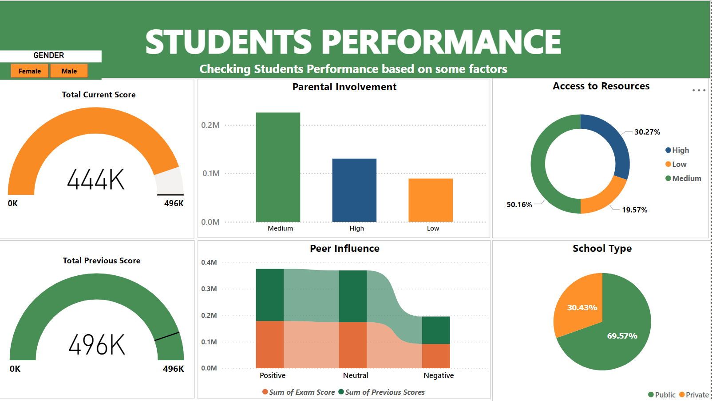
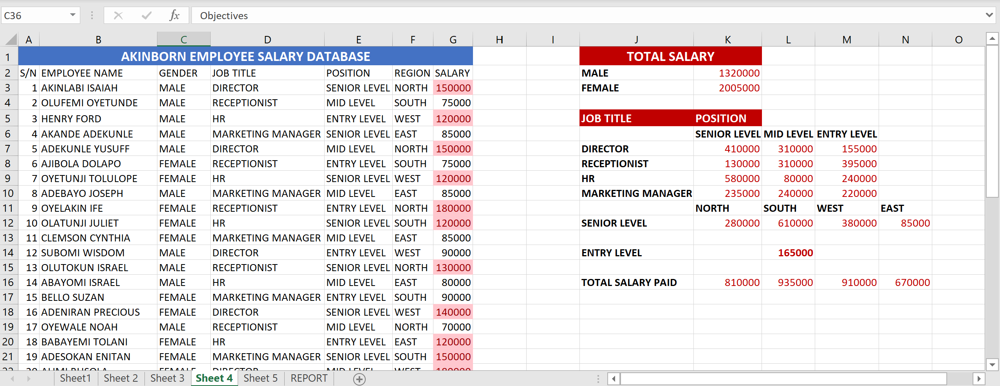

Welcome to my portfolio! My name is AKINLABI ISAIAH OLUFEMI.
I am a dedicated professional data analyst who loves finding patterns and insights in data. I use tools like Microsoft Excel, SQL and SPSS to analyze data and help
organizations make better decisions. I also enjoy creating clear and engaging data visualizations with tools like Power BI. I am skilled at organizing and cleaning data, exploring data to find trends, and derive meaningful insight.
My aim is to turn data into useful information that can guide important decisions. In my free time, I enjoy reading books and meditating, which keeps me motivated and regurgitate over problems solved and unsolved problems
(Student's Performance Dashboard)
Data Source: Secondary Data (Winfred International School)
The visualizations provided in this report offer insights into the students’ performance factors. By analyzing data through different charts, we can evaluate performance, know the composition, and make data-driven decisions to improve students’ performance. The bar chart displays the Total Exam scores for each parental involvement. This visualization makes it easy to compare the performance of the students based on each categories of parental involvements at a glance. The Donut chart displays the rate of student’s exam scores via their access to resources. This visualization makes it easy to know the percentage composition of students score based on their access to resources via the part to whole composition. The Ribbon chart displays the students previous scores and current Exam scores by Peer Influence.
Data Source: Secondary Data (Kaggle)
This Dashboard provides an overview of a sales data, using various views in Power BI. The data include Total sales, Product, Cost of Goods Sold, Profit, Segment, Year and Month. Each chart and visualization is carefully selected to show insights in the financial data. Bar chart explain the Total sales by product and allows us to compare the sales made by each product. Paseo is seen to have the highest sales. It also explain the sum of cogs by product in addition with the average COGs trendlines to know the sum and average cogs distribution on the products. Pie chart shows the composition of the Total sales by year; which 2014 was seen to be the year with the highest sales composition.
Data Source: Secondary Data (Kaggle)
Sales Data report Introduction: This Dashboard RT stores is a sales company that deals with selling of varieties of goods like Amarilla, Chocolate pack, Gift basket, men’s Shirt, Velo and VTT across some countries like Canada, France, Mexico, USA, and Germany. Recently, RT faced some challenges in their monthly income and decrease in sales which might eventually lead to laying off staffs and closing the company. This is an analysis to discover the problems and give recommendation based on the analysis using MS Excel and Power BI for data visualization. In my findings, It was observed that 118,73m, 101.83 & 18.45m were the Total Sales, Total Cost of Goods Sold and the Profit made respectively; whereby the profit was calculated after deducting the cost of goods sold from the total sales. It was observed using the Trendline and the stacked bar chart, that profit made has experience very low-medium-high trend since the inception of the product sold being bought which is not a good indicator of a profitable business; which indicates the business has been running on losses from 9th of January, 2013 till 12th January, 2013.
Data Source: Secondary Data (Kaggle)
Description: This Dashboard provides an overview of a car dealer financial data, using various views in MS Excel. The data include Selling price, maker, model, transmission, state, sales date, year trend. These charts include a bar chart indicating the selling price by model and maker indicating Camry hybrid has the maker and model with the highest selling price. The trend chart is also included to show the trends of the selling price by maker & model. The pie chart also explains the composition of the selling price by transmission; in which automatic cars have the highest composition in selling price.
Data Source: Secondary Data (Kulturehire)
Description: This Dashboard provides an overview of a supermarket sales data, using various views in MS Excel. The data include Gender, Total sales, Branches, Customer type, Time and Date. Bar chart explains distribution of total sales by Gender to get the Gender patronizing the supermarket the more. The pie chart explains the composition of the Cogs by city. This chart also consist of slicers use to filter the records in respect to the gender, time, branch and Date.
Creating Data Report with Excel Functions
Data Source: Primary Data
Description: This is an employee salary database to know the amount being paid out to each category of employees based on level, position and region. Data formatting was applied such as conditional formatting to highlight Total salary paid based on Gender, levels and positions, and this made it known to us that the female and those in the high positions has the highest paid salary.
Data Source: Secondary Data (Kulturehire)
DescriptionThis is a supermarket sales data which has so many column that needs to be cleaned and standardized. This data was cleaned with excel power query, irrelevant values were removed, columns were renamed to make standard column name.
Data Source: Secondary Data (Kulturehire)
DescriptionPivot table was created to answer the objective questions in the project like sum of profit by country, profit by year, profit by month and profit by segment.
Data Source: Primary Data (Mam's Tech)
Description: The data used for this project was provided by Mam’s tech team, the data was imported and it is used to answer the sql querying questions using terms like order by, group by, sum, count, alter, update, regexp, joins.
Data Source: Primary Data (Mam's Tech)
Description: This project deals creating database, tables and inserting rows into created table. The table has primary key, foreign key and each column has data type that correlate with the column. Some data query was performed like selecting all column. Update and altering function were used to update the table and also to change column type, modify and add new rows.
Data Source: Secondary Data
Description: Descriptive statistics is performed on the data to get the minimum, maximum, sum, mean, standard deviation and variance.
Description: Mann-Whitney test was used to check the significance between categorical variable with 2 groups and numerical.
Description:Wilcoxon Test is a paired sample T-test for sampling data; and it was used to check the significance between two numerical variables (Cost of goods sold and Total). From the result, Z value of 4.782 and P-value of 0.000 implies that we reject null hypothesis and accept alternate hypothesis that there is a significant difference between total and cost of goods sold.
Email: Daprincetech99@gmail.com